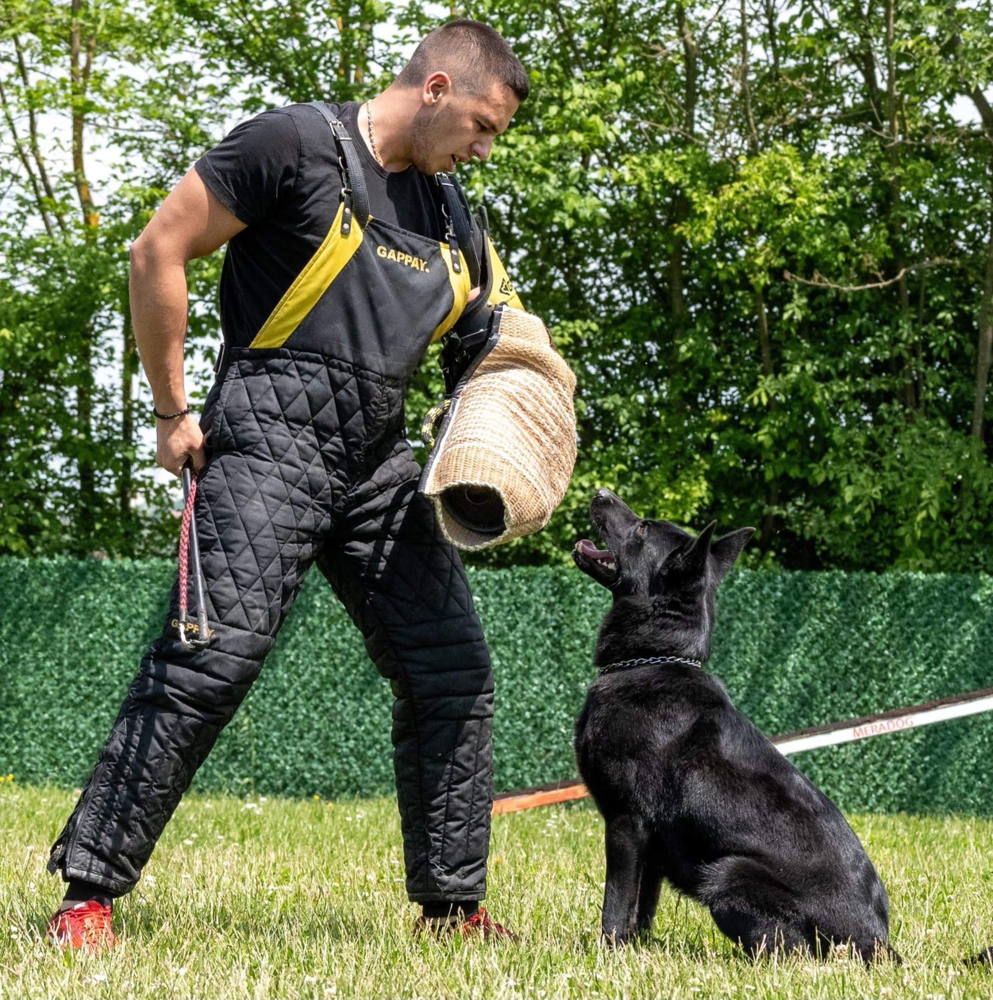
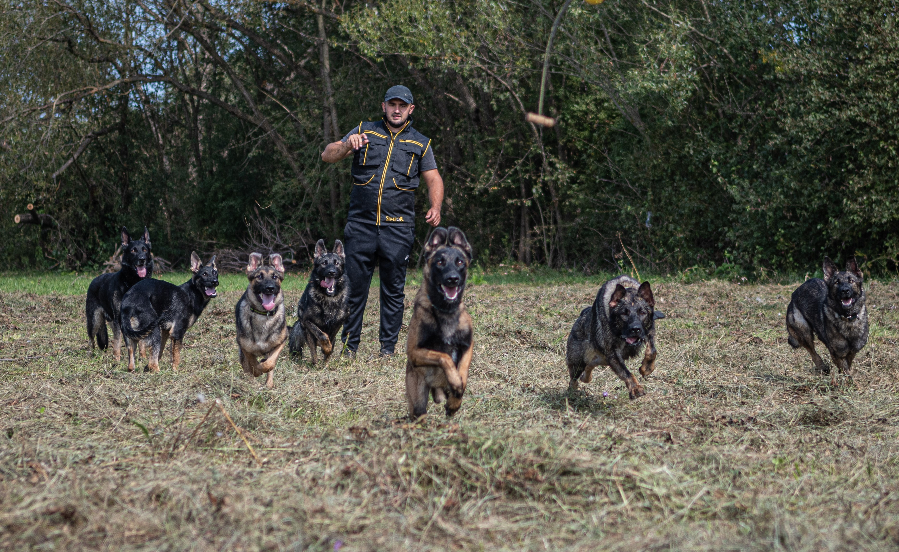
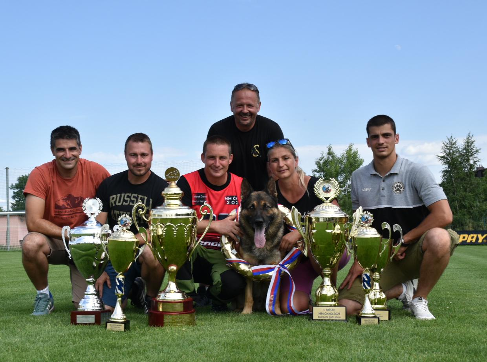
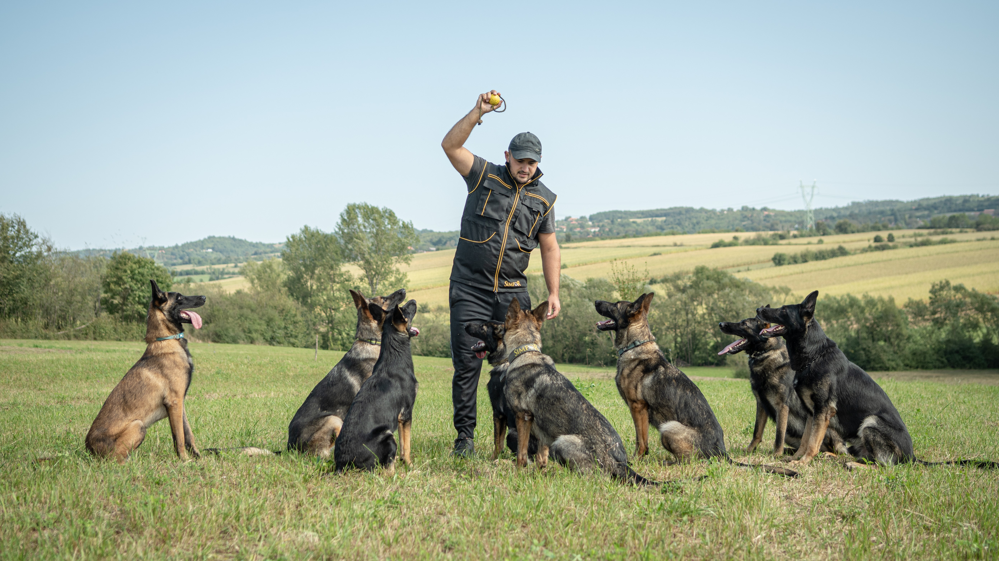

Simpor is a family kennel built on 30+ years of European working bloodlines, German Shepherds, Labradors, Rottweilers, Pointers and Belgian Shepherds. Since 1994, every dog we place is bred, raised and proofed in-house, by the same people who will eventually hand you the leash.
There is a reason serious owners, professional handlers and elite families across six continents keep coming back to us: we do not resell dogs, we do not import mystery bloodlines, and we do not promise what a dog cannot deliver.
Every dog you see on this website is at Simpor now, bred from parents we own or worked with directly, born in our facility or with a proven Simpor partner, and raised under our own protocols from day one. When you buy from Simpor, you are buying from the same family that put the first collar on the puppy.
Behind Simpor sits an FCI-registered kennel, number 3428, that has never gone dark since 1994. What that means for you: pedigrees you can cross-check, health paperwork that stands up to an outside vet's review, and a written sales agreement we hold ourselves to years after the dog leaves.

A Simpor dog is the product of decades of decisions, which bloodlines we bred, which puppies we kept, which dogs we placed, and which we did not. Everything below is a direct result of that discipline.
We produce a limited number of dogs per year, all hand-selected from parents we own or work with directly. Every puppy is raised in-home, with our family, our children and our pets, never in a run.
Our dogs are proofed in the environments they will actually live in, city traffic, restaurants, elevators, crowds, hotels, gunfire, night scenarios and strangers. Sport titles are earned along the way, but real life is the exam.
Simpor dogs grow up alongside our family, not in isolation. They sleep in the house, ride in the car, eat around the table and walk beside the children. By the time you meet them, they already know how to live with a family.
Every dog we place is trained to on- and off-leash reliability in functional commands: heel, recall, place, out, down under distraction, restaurant behaviour, calm greetings and confident public work.
The core of a Simpor protection dog is control. A clear, testable "on / off" switch, sharp when called, gentle when released, and always neutral by default around family, guests and the public.
No surprises after purchase. Every dog that leaves our kennel is delivered with complete documentation, full health work, and the level of preparation you would expect from a kennel that has done this for three decades.
Verifiable four-generation pedigree issued by the Kennel Club of Serbia under FCI standards, with titled parents and grandparents on the document.
Signed veterinary certificate of health issued at handover, plus internal health record from birth including deworming and vaccination history.
Adult dogs are placed with official hip and elbow evaluations. Every breeding parent in our program is hip- and elbow-graded before being used.
All vaccinations current for age. EU pet passport for adult dogs travelling internationally, with rabies titre when destination requires it.
ISO-standard microchip registered in your name, cross-referenced to the pedigree and to the dog's Simpor file for lifetime traceability.
Every placement includes an in-person handover session, either at our facility or, when appropriate, at your home, to transfer commands, protocols and long-term routine.
Every Simpor placement is accompanied by a written sales agreement with a clear health and temperament guarantee. If a dog placed by us develops a disqualifying congenital condition within the guarantee window, we make it right, as it is written in the contract, not as an afterthought.
More than the paperwork: our commitment does not end at handover. We remain available for the life of the dog for questions on training, health, breeding decisions or anything else that concerns a dog that carries the Simpor name.
Talk to Simpor

A short conversation is the fastest way to understand which of our dogs, if any, is right for your household, your travel patterns, and your security concerns. We prefer honest guidance over a fast sale.
Book an Introductory Call